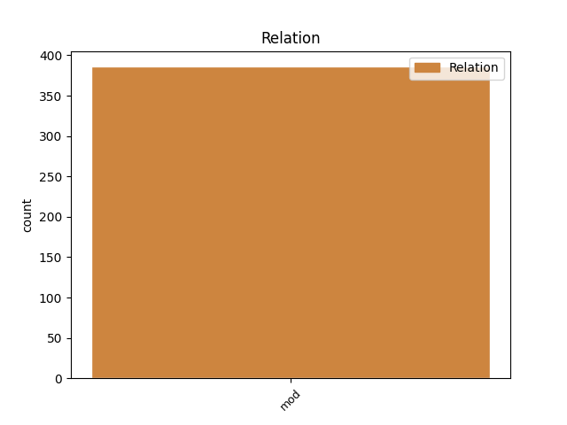
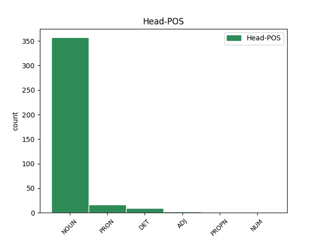
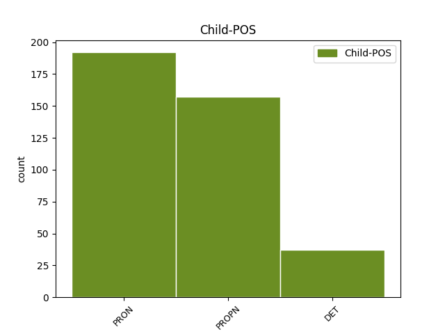

Distribution of features within this leaf



Agreement Rules sorted by frequency.
- When the dependent token is the modifer(mod) of the head token, and the head token is NOUN and the dependent token is PRON.
1 Statistica _ _ _ _ 0 _ _ _
2 este _ _ _ _ 0 _ _ _
3 știința _ _ _ _ 0 _ _ _
4 colectării _ _ _ _ 0 _ _ _
5 , _ _ _ _ 0 _ _ _
6 clasificării _ _ _ _ 0 _ _ _
7 , _ _ _ _ 0 _ _ _
8 prezentării _ _ _ _ 0 _ _ _
9 , _ _ _ _ 0 _ _ _
10 interpretării _ _ _ _ 0 _ _ _
11 datelor _ _ _ _ 0 _ _ _
12 numerice _ _ _ _ 0 _ _ _
13 și _ _ _ _ 0 _ _ _
14 a _ _ _ _ 0 _ _ _
15 folosirii folosire NOUN Ncfsoy Case=Dat,Gen|Definite=Def|Gender=Fem|Number=Sing 0 _ _ _
16 acestora acesta PRON Pd3-po Case=Dat,Gen|Number=Plur|Person=3|PronType=Dem 15 mod _ _
17 pentru _ _ _ _ 0 _ _ _
18 a _ _ _ _ 0 _ _ _
19 formula _ _ _ _ 0 _ _ _
20 concluzii _ _ _ _ 0 _ _ _
21 și _ _ _ _ 0 _ _ _
22 a _ _ _ _ 0 _ _ _
23 lua _ _ _ _ 0 _ _ _
24 decizii _ _ _ _ 0 _ _ _
25 . _ _ _ _ 0 _ _ _
1 De-a _ _ _ _ 0 _ _ _
2 lungul _ _ _ _ 0 _ _ _
3 istoriei _ _ _ _ 0 _ _ _
4 , _ _ _ _ 0 _ _ _
5 diferite _ _ _ _ 0 _ _ _
6 porțiuni _ _ _ _ 0 _ _ _
7 ale _ _ _ _ 0 _ _ _
8 teritoriului teritoriu NOUN Ncmsoy Case=Dat,Gen|Definite=Def|Gender=Masc|Number=Sing 0 _ _ _
9 de _ _ _ _ 0 _ _ _
10 astăzi _ _ _ _ 0 _ _ _
11 al _ _ _ _ 0 _ _ _
12 României România PROPN Npfsoy Case=Dat,Gen|Definite=Def|Gender=Fem|Number=Sing 8 mod _ _
13 au _ _ _ _ 0 _ _ _
14 fost _ _ _ _ 0 _ _ _
15 în _ _ _ _ 0 _ _ _
16 componența _ _ _ _ 0 _ _ _
17 sau _ _ _ _ 0 _ _ _
18 sub _ _ _ _ 0 _ _ _
19 administrația _ _ _ _ 0 _ _ _
20 Daciei _ _ _ _ 0 _ _ _
21 , _ _ _ _ 0 _ _ _
22 Imperiului _ _ _ _ 0 _ _ _
23 Roman _ _ _ _ 0 _ _ _
24 , _ _ _ _ 0 _ _ _
25 Imperiului _ _ _ _ 0 _ _ _
26 Otoman _ _ _ _ 0 _ _ _
27 , _ _ _ _ 0 _ _ _
28 Imperiului _ _ _ _ 0 _ _ _
29 Rus _ _ _ _ 0 _ _ _
30 sau _ _ _ _ 0 _ _ _
31 a _ _ _ _ 0 _ _ _
32 celui _ _ _ _ 0 _ _ _
33 Austro-Ungar _ _ _ _ 0 _ _ _
34 . _ _ _ _ 0 _ _ _
1 Conform _ _ _ _ 0 _ _ _
2 regulii _ _ _ _ 0 _ _ _
3 empirice _ _ _ _ 0 _ _ _
4 dacă _ _ _ _ 0 _ _ _
5 o _ _ _ _ 0 _ _ _
6 serie _ _ _ _ 0 _ _ _
7 de _ _ _ _ 0 _ _ _
8 repartiție _ _ _ _ 0 _ _ _
9 este _ _ _ _ 0 _ _ _
10 normală _ _ _ _ 0 _ _ _
11 atunci _ _ _ _ 0 _ _ _
12 fracțiunea _ _ _ _ 0 _ _ _
13 de _ _ _ _ 0 _ _ _
14 date _ _ _ _ 0 _ _ _
15 situate _ _ _ _ 0 _ _ _
16 la _ _ _ _ 0 _ _ _
17 cel _ _ _ _ 0 _ _ _
18 mult _ _ _ _ 0 _ _ _
19 o un DET Tifsr Case=Acc,Nom|Gender=Fem|Number=Sing|PronType=Ind 20 mod _ _
20 unitate unitate NOUN Ncfsrn Case=Acc,Nom|Definite=Ind|Gender=Fem|Number=Sing 0 _ _ _
21 de _ _ _ _ 0 _ _ _
22 deviație _ _ _ _ 0 _ _ _
23 standard _ _ _ _ 0 _ _ _
24 s _ _ _ _ 0 _ _ _
25 față _ _ _ _ 0 _ _ _
26 de _ _ _ _ 0 _ _ _
27 medie _ _ _ _ 0 _ _ _
28 este _ _ _ _ 0 _ _ _
29 aproximativ _ _ _ _ 0 _ _ _
30 68% _ _ _ _ 0 _ _ _
31 , _ _ _ _ 0 _ _ _
32 iar _ _ _ _ 0 _ _ _
33 fracțiunea _ _ _ _ 0 _ _ _
34 de _ _ _ _ 0 _ _ _
35 date _ _ _ _ 0 _ _ _
36 situate _ _ _ _ 0 _ _ _
37 la _ _ _ _ 0 _ _ _
38 cel _ _ _ _ 0 _ _ _
39 mult _ _ _ _ 0 _ _ _
40 două _ _ _ _ 0 _ _ _
41 unități _ _ _ _ 0 _ _ _
42 de _ _ _ _ 0 _ _ _
43 deviație _ _ _ _ 0 _ _ _
44 standard _ _ _ _ 0 _ _ _
45 s _ _ _ _ 0 _ _ _
46 față _ _ _ _ 0 _ _ _
47 de _ _ _ _ 0 _ _ _
48 medie _ _ _ _ 0 _ _ _
49 este _ _ _ _ 0 _ _ _
50 aproximativ _ _ _ _ 0 _ _ _
51 95% _ _ _ _ 0 _ _ _
52 . _ _ _ _ 0 _ _ _
1 A _ _ _ _ 0 _ _ _
2 reușit _ _ _ _ 0 _ _ _
3 aceasta _ _ _ _ 0 _ _ _
4 fiindcă _ _ _ _ 0 _ _ _
5 a _ _ _ _ 0 _ _ _
6 făgăduit _ _ _ _ 0 _ _ _
7 să _ _ _ _ 0 _ _ _
8 -i _ _ _ _ 0 _ _ _
9 hrănească _ _ _ _ 0 _ _ _
10 pe _ _ _ _ 0 _ _ _
11 socoteala _ _ _ _ 0 _ _ _
12 guvernului _ _ _ _ 0 _ _ _
13 pe _ _ _ _ 0 _ _ _
14 toți tot PRON Pi3mpr Case=Acc,Nom|Gender=Masc|Number=Plur|Person=3|PronType=Ind 15 mod _ _
15 cei acela PRON Pd3mpr Case=Acc,Nom|Gender=Masc|Number=Plur|Person=3|PronType=Dem 0 _ _ _
16 care _ _ _ _ 0 _ _ _
17 n- _ _ _ _ 0 _ _ _
18 aveau _ _ _ _ 0 _ _ _
19 mijloace _ _ _ _ 0 _ _ _
20 să _ _ _ _ 0 _ _ _
21 se _ _ _ _ 0 _ _ _
22 întrețină _ _ _ _ 0 _ _ _
23 . _ _ _ _ 0 _ _ _
1 Conform _ _ _ _ 0 _ _ _
2 regulii _ _ _ _ 0 _ _ _
3 empirice _ _ _ _ 0 _ _ _
4 dacă _ _ _ _ 0 _ _ _
5 o _ _ _ _ 0 _ _ _
6 serie _ _ _ _ 0 _ _ _
7 de _ _ _ _ 0 _ _ _
8 repartiție _ _ _ _ 0 _ _ _
9 este _ _ _ _ 0 _ _ _
10 normală _ _ _ _ 0 _ _ _
11 atunci _ _ _ _ 0 _ _ _
12 fracțiunea _ _ _ _ 0 _ _ _
13 de _ _ _ _ 0 _ _ _
14 date _ _ _ _ 0 _ _ _
15 situate _ _ _ _ 0 _ _ _
16 la _ _ _ _ 0 _ _ _
17 cel cel DET Tdmsr Case=Acc,Nom|Gender=Masc|Number=Sing|PronType=Dem 19 mod _ _
18 mult _ _ _ _ 0 _ _ _
19 o un DET Tifsr Case=Acc,Nom|Gender=Fem|Number=Sing|PronType=Ind 0 _ _ _
20 unitate _ _ _ _ 0 _ _ _
21 de _ _ _ _ 0 _ _ _
22 deviație _ _ _ _ 0 _ _ _
23 standard _ _ _ _ 0 _ _ _
24 s _ _ _ _ 0 _ _ _
25 față _ _ _ _ 0 _ _ _
26 de _ _ _ _ 0 _ _ _
27 medie _ _ _ _ 0 _ _ _
28 este _ _ _ _ 0 _ _ _
29 aproximativ _ _ _ _ 0 _ _ _
30 68% _ _ _ _ 0 _ _ _
31 , _ _ _ _ 0 _ _ _
32 iar _ _ _ _ 0 _ _ _
33 fracțiunea _ _ _ _ 0 _ _ _
34 de _ _ _ _ 0 _ _ _
35 date _ _ _ _ 0 _ _ _
36 situate _ _ _ _ 0 _ _ _
37 la _ _ _ _ 0 _ _ _
38 cel _ _ _ _ 0 _ _ _
39 mult _ _ _ _ 0 _ _ _
40 două _ _ _ _ 0 _ _ _
41 unități _ _ _ _ 0 _ _ _
42 de _ _ _ _ 0 _ _ _
43 deviație _ _ _ _ 0 _ _ _
44 standard _ _ _ _ 0 _ _ _
45 s _ _ _ _ 0 _ _ _
46 față _ _ _ _ 0 _ _ _
47 de _ _ _ _ 0 _ _ _
48 medie _ _ _ _ 0 _ _ _
49 este _ _ _ _ 0 _ _ _
50 aproximativ _ _ _ _ 0 _ _ _
51 95% _ _ _ _ 0 _ _ _
52 . _ _ _ _ 0 _ _ _
1 Dobrogea _ _ _ _ 0 _ _ _
2 , _ _ _ _ 0 _ _ _
3 în _ _ _ _ 0 _ _ _
4 schimb _ _ _ _ 0 _ _ _
5 , _ _ _ _ 0 _ _ _
6 mai _ _ _ _ 0 _ _ _
7 picturală _ _ _ _ 0 _ _ _
8 , _ _ _ _ 0 _ _ _
9 va _ _ _ _ 0 _ _ _
10 inspira _ _ _ _ 0 _ _ _
11 , _ _ _ _ 0 _ _ _
12 în _ _ _ _ 0 _ _ _
13 rama _ _ _ _ 0 _ _ _
14 pitorescului _ _ _ _ 0 _ _ _
15 decor _ _ _ _ 0 _ _ _
16 , _ _ _ _ 0 _ _ _
17 ceva ceva PRON Pi3-sr Case=Acc,Nom|Number=Sing|Person=3|PronType=Ind 19 mod _ _
18 mai _ _ _ _ 0 _ _ _
19 multă mult DET Di3fsr Case=Acc,Nom|Gender=Fem|Number=Sing|Person=3|PronType=Ind 0 _ _ _
20 libertate _ _ _ _ 0 _ _ _
21 epică _ _ _ _ 0 _ _ _
22 . _ _ _ _ 0 _ _ _
1 O _ _ _ _ 0 _ _ _
2 situație _ _ _ _ 0 _ _ _
3 în _ _ _ _ 0 _ _ _
4 care _ _ _ _ 0 _ _ _
5 cel _ _ _ _ 0 _ _ _
6 puțin _ _ _ _ 0 _ _ _
7 două _ _ _ _ 0 _ _ _
8 persoane _ _ _ _ 0 _ _ _
9 fizice _ _ _ _ 0 _ _ _
10 sau _ _ _ _ 0 _ _ _
11 juridice _ _ _ _ 0 _ _ _
12 sunt _ _ _ _ 0 _ _ _
13 legate _ _ _ _ 0 _ _ _
14 în _ _ _ _ 0 _ _ _
15 permanență _ _ _ _ 0 _ _ _
16 de _ _ _ _ 0 _ _ _
17 una unul PRON Pi3fsr Case=Acc,Nom|Gender=Fem|Number=Sing|Person=3|PronType=Ind 0 _ _ _
18 și _ _ _ _ 0 _ _ _
19 aceeași același DET Dd3fsr---e Case=Acc,Nom|Gender=Fem|Number=Sing|Person=3|Position=Prenom|PronType=Dem 17 mod _ _
20 persoană _ _ _ _ 0 _ _ _
21 printr- _ _ _ _ 0 _ _ _
22 o _ _ _ _ 0 _ _ _
23 relație _ _ _ _ 0 _ _ _
24 de _ _ _ _ 0 _ _ _
25 control _ _ _ _ 0 _ _ _
26 este _ _ _ _ 0 _ _ _
27 considerată _ _ _ _ 0 _ _ _
28 , _ _ _ _ 0 _ _ _
29 de _ _ _ _ 0 _ _ _
30 asemenea _ _ _ _ 0 _ _ _
31 , _ _ _ _ 0 _ _ _
32 ca _ _ _ _ 0 _ _ _
33 fiind _ _ _ _ 0 _ _ _
34 o _ _ _ _ 0 _ _ _
35 legătură _ _ _ _ 0 _ _ _
36 strânsă _ _ _ _ 0 _ _ _
37 între _ _ _ _ 0 _ _ _
38 persoanele _ _ _ _ 0 _ _ _
39 respective _ _ _ _ 0 _ _ _
40 . _ _ _ _ 0 _ _ _
1 Din _ _ _ _ 0 _ _ _
2 nefericire _ _ _ _ 0 _ _ _
3 , _ _ _ _ 0 _ _ _
4 Betty _ _ _ _ 0 _ _ _
5 cea acela PRON Pd3fsr Case=Acc,Nom|Gender=Fem|Number=Sing|Person=3|PronType=Dem 6 mod _ _
6 iubită iubit ADJ Afpfsrn Case=Acc,Nom|Definite=Ind|Degree=Pos|Gender=Fem|Number=Sing 0 _ _ _
7 a _ _ _ _ 0 _ _ _
8 lui _ _ _ _ 0 _ _ _
9 Monty _ _ _ _ 0 _ _ _
10 a _ _ _ _ 0 _ _ _
11 murit _ _ _ _ 0 _ _ _
12 de _ _ _ _ 0 _ _ _
13 o _ _ _ _ 0 _ _ _
14 boală _ _ _ _ 0 _ _ _
15 ciudată _ _ _ _ 0 _ _ _
16 , _ _ _ _ 0 _ _ _
17 doar _ _ _ _ 0 _ _ _
18 zece _ _ _ _ 0 _ _ _
19 ani _ _ _ _ 0 _ _ _
20 mai _ _ _ _ 0 _ _ _
21 târziu _ _ _ _ 0 _ _ _
22 , _ _ _ _ 0 _ _ _
23 lăsând _ _ _ _ 0 _ _ _
24 un _ _ _ _ 0 _ _ _
25 Monty _ _ _ _ 0 _ _ _
26 îndurerat _ _ _ _ 0 _ _ _
27 cu _ _ _ _ 0 _ _ _
28 un _ _ _ _ 0 _ _ _
29 fiu _ _ _ _ 0 _ _ _
30 , _ _ _ _ 0 _ _ _
31 David _ _ _ _ 0 _ _ _
32 . _ _ _ _ 0 _ _ _
1 Invenția _ _ _ _ 0 _ _ _
2 pedagogică _ _ _ _ 0 _ _ _
3 cea cel DET Tdfsr Case=Acc,Nom|Gender=Fem|Number=Sing|PronType=Dem 5 mod _ _
4 mai _ _ _ _ 0 _ _ _
5 mare mare ADJ Afpfsrn Case=Acc,Nom|Definite=Ind|Degree=Pos|Gender=Fem|Number=Sing 0 _ _ _
6 a _ _ _ _ 0 _ _ _
7 lui _ _ _ _ 0 _ _ _
8 Banciu _ _ _ _ 0 _ _ _
9 a _ _ _ _ 0 _ _ _
10 fost _ _ _ _ 0 _ _ _
11 activitatea _ _ _ _ 0 _ _ _
12 grafică _ _ _ _ 0 _ _ _
13 ce _ _ _ _ 0 _ _ _
14 ne _ _ _ _ 0 _ _ _
15 impusese _ _ _ _ 0 _ _ _
16 . _ _ _ _ 0 _ _ _
1 Quartila _ _ _ _ 0 _ _ _
2 Q1 _ _ _ _ 0 _ _ _
3 este _ _ _ _ 0 _ _ _
4 un _ _ _ _ 0 _ _ _
5 număr _ _ _ _ 0 _ _ _
6 cu _ _ _ _ 0 _ _ _
7 proprietatea _ _ _ _ 0 _ _ _
8 că _ _ _ _ 0 _ _ _
9 o un DET Tifsr Case=Acc,Nom|Gender=Fem|Number=Sing|PronType=Ind 10 mod _ _
10 pătrime pătrime NUM Mffsrln Case=Acc,Nom|Definite=Ind|Gender=Fem|Number=Sing|NumForm=Word|NumType=Card 0 _ _ _
11 din _ _ _ _ 0 _ _ _
12 date _ _ _ _ 0 _ _ _
13 au _ _ _ _ 0 _ _ _
14 valori _ _ _ _ 0 _ _ _
15 mai _ _ _ _ 0 _ _ _
16 mici _ _ _ _ 0 _ _ _
17 decât _ _ _ _ 0 _ _ _
18 Q1 _ _ _ _ 0 _ _ _
19 și _ _ _ _ 0 _ _ _
20 trei _ _ _ _ 0 _ _ _
21 pătrimi _ _ _ _ 0 _ _ _
22 din _ _ _ _ 0 _ _ _
23 date _ _ _ _ 0 _ _ _
24 au _ _ _ _ 0 _ _ _
25 valori _ _ _ _ 0 _ _ _
26 mai _ _ _ _ 0 _ _ _
27 mari _ _ _ _ 0 _ _ _
28 decât _ _ _ _ 0 _ _ _
29 Q1 _ _ _ _ 0 _ _ _
30 . _ _ _ _ 0 _ _ _
Disagree Examples:
1 În _ _ _ _ 0 _ _ _
2 sfârșit _ _ _ _ 0 _ _ _
3 , _ _ _ _ 0 _ _ _
4 se _ _ _ _ 0 _ _ _
5 găseau _ _ _ _ 0 _ _ _
6 față _ _ _ _ 0 _ _ _
7 în _ _ _ _ 0 _ _ _
8 față _ _ _ _ 0 _ _ _
9 și _ _ _ _ 0 _ _ _
10 parcă _ _ _ _ 0 _ _ _
11 prima _ _ _ _ 0 _ _ _
12 și _ _ _ _ 0 _ _ _
13 singura _ _ _ _ 0 _ _ _
14 lui el PRON Pp3mso--------s Case=Dat,Gen|Gender=Masc|Number=Sing|Person=3|PronType=Prs|Strength=Strong 15 mod _ _
15 pornire pornire NOUN Ncfsrn Case=Acc,Nom|Definite=Ind|Gender=Fem|Number=Sing 0 _ _ _
16 era _ _ _ _ 0 _ _ _
17 să _ _ _ _ 0 _ _ _
18 fugă _ _ _ _ 0 _ _ _
19 de _ _ _ _ 0 _ _ _
20 acolo _ _ _ _ 0 _ _ _
21 . _ _ _ _ 0 _ _ _
1 Nu _ _ _ _ 0 _ _ _
2 erau _ _ _ _ 0 _ _ _
3 decât _ _ _ _ 0 _ _ _
4 niște _ _ _ _ 0 _ _ _
5 vorbe _ _ _ _ 0 _ _ _
6 de _ _ _ _ 0 _ _ _
7 încurajare _ _ _ _ 0 _ _ _
8 , _ _ _ _ 0 _ _ _
9 de _ _ _ _ 0 _ _ _
10 genul gen NOUN Ncmsry Case=Acc,Nom|Definite=Def|Gender=Masc|Number=Sing 0 _ _ _
11 celor acela PRON Pd3-po Case=Dat,Gen|Number=Plur|Person=3|PronType=Dem 10 mod _ _
12 care _ _ _ _ 0 _ _ _
13 se _ _ _ _ 0 _ _ _
14 rostesc _ _ _ _ 0 _ _ _
15 în _ _ _ _ 0 _ _ _
16 focul _ _ _ _ 0 _ _ _
17 luptei _ _ _ _ 0 _ _ _
18 și _ _ _ _ 0 _ _ _
19 pe _ _ _ _ 0 _ _ _
20 care _ _ _ _ 0 _ _ _
21 nu _ _ _ _ 0 _ _ _
22 le _ _ _ _ 0 _ _ _
23 poți _ _ _ _ 0 _ _ _
24 distinge _ _ _ _ 0 _ _ _
25 una _ _ _ _ 0 _ _ _
26 câte _ _ _ _ 0 _ _ _
27 una _ _ _ _ 0 _ _ _
28 , _ _ _ _ 0 _ _ _
29 dar _ _ _ _ 0 _ _ _
30 care _ _ _ _ 0 _ _ _
31 îți _ _ _ _ 0 _ _ _
32 redau _ _ _ _ 0 _ _ _
33 încrederea _ _ _ _ 0 _ _ _
34 în _ _ _ _ 0 _ _ _
35 tine _ _ _ _ 0 _ _ _
36 prin _ _ _ _ 0 _ _ _
37 simplul _ _ _ _ 0 _ _ _
38 fapt _ _ _ _ 0 _ _ _
39 că _ _ _ _ 0 _ _ _
40 sunt _ _ _ _ 0 _ _ _
41 rostite _ _ _ _ 0 _ _ _
42 . _ _ _ _ 0 _ _ _
1 Era _ _ _ _ 0 _ _ _
2 ca _ _ _ _ 0 _ _ _
3 și _ _ _ _ 0 _ _ _
4 cum _ _ _ _ 0 _ _ _
5 mintea minte NOUN Ncfsry Case=Acc,Nom|Definite=Def|Gender=Fem|Number=Sing 0 _ _ _
6 fiecăruia fiecare PRON Pi3mso Case=Dat,Gen|Gender=Masc|Number=Sing|Person=3|PronType=Ind 5 mod _ _
7 s- _ _ _ _ 0 _ _ _
8 ar _ _ _ _ 0 _ _ _
9 fi _ _ _ _ 0 _ _ _
10 deschis _ _ _ _ 0 _ _ _
11 și _ _ _ _ 0 _ _ _
12 gândurile _ _ _ _ 0 _ _ _
13 ar _ _ _ _ 0 _ _ _
14 fi _ _ _ _ 0 _ _ _
15 zburat _ _ _ _ 0 _ _ _
16 de _ _ _ _ 0 _ _ _
17 la _ _ _ _ 0 _ _ _
18 unul _ _ _ _ 0 _ _ _
19 la _ _ _ _ 0 _ _ _
20 celălalt _ _ _ _ 0 _ _ _
21 prin _ _ _ _ 0 _ _ _
22 ochi _ _ _ _ 0 _ _ _
23 . _ _ _ _ 0 _ _ _
1 Asta _ _ _ _ 0 _ _ _
2 , _ _ _ _ 0 _ _ _
3 se _ _ _ _ 0 _ _ _
4 gândi _ _ _ _ 0 _ _ _
5 el _ _ _ _ 0 _ _ _
6 cu _ _ _ _ 0 _ _ _
7 un _ _ _ _ 0 _ _ _
8 vag _ _ _ _ 0 _ _ _
9 dezgust _ _ _ _ 0 _ _ _
10 , _ _ _ _ 0 _ _ _
11 asta _ _ _ _ 0 _ _ _
12 era _ _ _ _ 0 _ _ _
13 Londra _ _ _ _ 0 _ _ _
14 , _ _ _ _ 0 _ _ _
15 principalul _ _ _ _ 0 _ _ _
16 oraș _ _ _ _ 0 _ _ _
17 al _ _ _ _ 0 _ _ _
18 Aerobazei _ _ _ _ 0 _ _ _
19 Unu _ _ _ _ 0 _ _ _
20 care _ _ _ _ 0 _ _ _
21 , _ _ _ _ 0 _ _ _
22 la _ _ _ _ 0 _ _ _
23 rândul _ _ _ _ 0 _ _ _
24 ei _ _ _ _ 0 _ _ _
25 , _ _ _ _ 0 _ _ _
26 era _ _ _ _ 0 _ _ _
27 a _ _ _ _ 0 _ _ _
28 treia _ _ _ _ 0 _ _ _
29 provincie provincie NOUN Ncfsrn Case=Acc,Nom|Definite=Ind|Gender=Fem|Number=Sing 0 _ _ _
30 a _ _ _ _ 0 _ _ _
31 Oceaniei Oceania PROPN Npfsoy Case=Dat,Gen|Definite=Def|Gender=Fem|Number=Sing 29 mod _ ToDo=nmod
32 ca _ _ _ _ 0 _ _ _
33 număr _ _ _ _ 0 _ _ _
34 de _ _ _ _ 0 _ _ _
35 locuitori _ _ _ _ 0 _ _ _
36 . _ _ _ _ 0 _ _ _
1 Stând _ _ _ _ 0 _ _ _
2 în _ _ _ _ 0 _ _ _
3 nișa _ _ _ _ 0 _ _ _
4 respectivă _ _ _ _ 0 _ _ _
5 , _ _ _ _ 0 _ _ _
6 lipit _ _ _ _ 0 _ _ _
7 de _ _ _ _ 0 _ _ _
8 perete _ _ _ _ 0 _ _ _
9 , _ _ _ _ 0 _ _ _
10 Winston _ _ _ _ 0 _ _ _
11 putea _ _ _ _ 0 _ _ _
12 rămâne _ _ _ _ 0 _ _ _
13 în _ _ _ _ 0 _ _ _
14 afara _ _ _ _ 0 _ _ _
15 câmpului _ _ _ _ 0 _ _ _
16 de _ _ _ _ 0 _ _ _
17 acțiune _ _ _ _ 0 _ _ _
18 al _ _ _ _ 0 _ _ _
19 tele-ecranului _ _ _ _ 0 _ _ _
20 , _ _ _ _ 0 _ _ _
21 cel cel DET Tdmsr Case=Acc,Nom|Gender=Masc|Number=Sing|PronType=Dem 24 mod _ _
22 puțin _ _ _ _ 0 _ _ _
23 a _ _ _ _ 0 _ _ _
24 câmpului câmp NOUN Ncmsoy Case=Dat,Gen|Definite=Def|Gender=Masc|Number=Sing 0 _ _ _
25 vizual _ _ _ _ 0 _ _ _
26 . _ _ _ _ 0 _ _ _